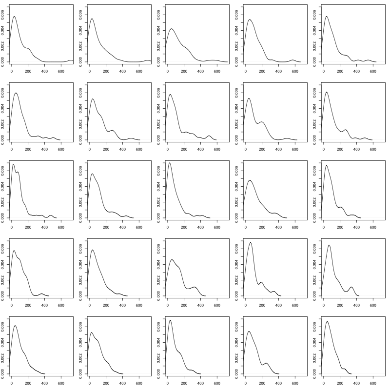
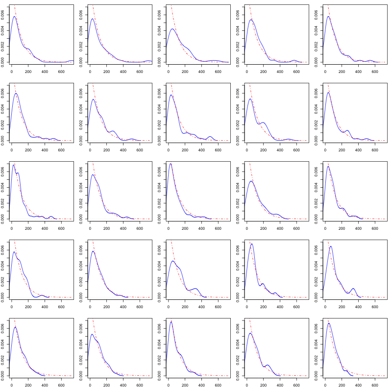
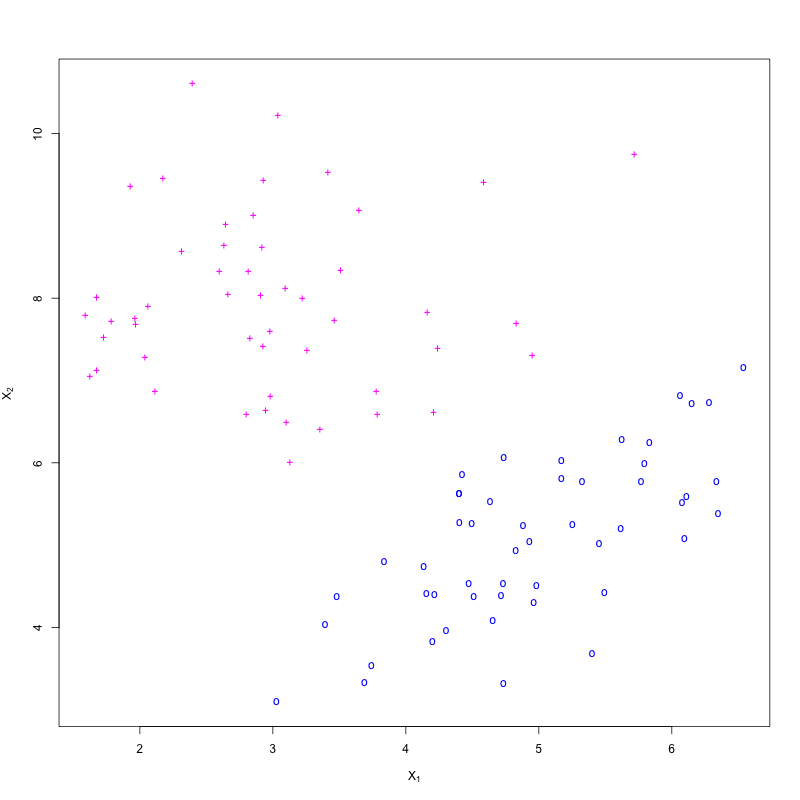
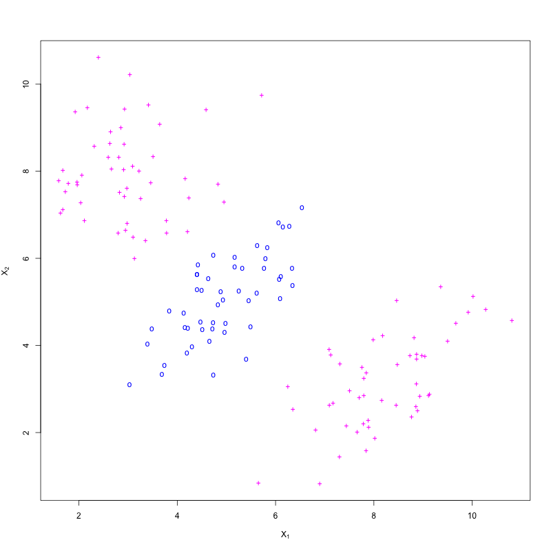
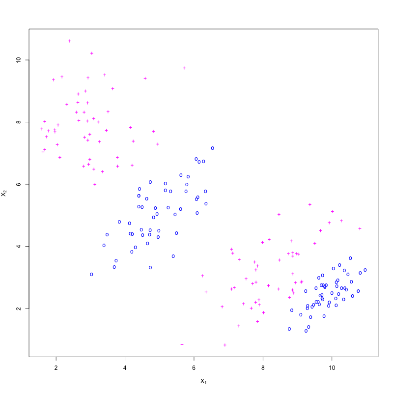

class: center, middle # Survey of Statistical Machine Learning ## [https://github.com/dsidavis/SurveyStatML](https://github.com/dsidavis/SurveyStatML) ### Duncan Temple Lang <div style="clear: both"/> <!-- <hr width="50%"/> --> <img src="http://dsi.ucdavis.edu/images/dsi_banner.png" height="40%"></img> --- layout: true <img style="float: right" src="http://dsi.ucdavis.edu/images/dsi_brand_logo.png" width="10%"></img> --- # Motivation/Purpose + Get feedback from you on + what you already know, + what you think you know + what you want to know + what level of detail + We'll adapt for next week + cover different topics + revisit today's topics with different focus + move up/down a level of technical detail + focus more on software, case studies, theory. + Concept for a course in Data Science for a graduate Designated Emphasis and Graduate Academic Certificate. --- # Today + General concepts of ML, Data Analysis, Vocabulary + Refresher about sampling distribution. + Classification -- ## Why classification. + Easier to understand - more heuristic. + Prediction/Classification rather than inference. + Some nice general concepts + Some modern(ish) concepts + Don't teach as much as non-parametric classification/prediction methods in class, relative to regression. + Regression, regularization, etc. somewhat/slightly more complex <!-- + We won't go to deep learning today, but figure out whether it would be good for next week. --> --- # Garbage In, Garbage Out ### If you mislead machine learning, it will mislead you. + Stat Machine Learning Methods are important, but are just one part of the data pipeline + Frame question incorrectly, result is *severely challenged*. + Measure the wrong concept, ... + Sample incorrectly, inference about target population is *mostly flawed/unreliable*. + Many people don't consider issues of sampling bias/found data. + Sampling bias ≠ Estimation bias. + Mess up data acquisition systematically, *inference is broken*. + Clean data poorly, inference is *often challenged*. ### The data pipeline can fail at *any* stage. --- # Example: SPAM Email + Collect representative emails + Not my email - unless personalized filter + Historical data - spam changing over time. + Get data from server, mbox, ... + Read their the metadata, text, attachments. + Clean stop words, stem, ... + How much do we care about missing emails that are relevant to me? + How much spam can I deal with it? + What are the costs of Type I and II errors. + Evaluate different approaches. + Feature engineering --- # Why so many methods? <center style="padding-top: 10px"><i>"There is no free lunch in statistics: no one method dominates all others over all possible data sets. On a particular data set, one specific method may work best, but some other method may work better on a similar but different data set."</i></center> <div style="float: right">Introduction to Statistical Learning with R</div> <div style="clear:both; padding-top: 40px"/> + So need to consider different methods + Need to be aware that your "best" method may be specific to your particular sample. + Get a different sample, different method might be "best". + Data analysis still requires human decisions. --- # Qualitatively Robust Results ### Compare Alternative Methods + If your (qualitative) conclusions are very different (i.e. very sensitive) to the choice of method, you probably have a problem. + So we like to use several methods and compare the results. + Exploratory analysis of differences may reveal new features via residuals. + In some cases, we will combine the results from multiple methods - ensembles. ### So let's not get wedded to particular methods. --- # Methods versus Data Analysis + Understandable focus on methods. + What is taught in classes. + If they work adequately, not much thought needed. + Data exploration, feature engineering critical. + Important to define loss function for "real" question. + Loss function "defines" the method. + Generic methods (mostly) define the loss function. --- # Purpose of Machine Learning ## Prediction versus Classification versus Estimation + Prediction + Predict continuous/integer valued response given predictor values + Classification + Predicting Categorical outcome from given predictor values + Binary outcome or multi-class outcome + Prediction v Classification + Magnitude of error versus Misclassification + Cost of misclassification to different groups + Estimation + Interpretation of parameters in model --- # Supervized, Unsupervized, Semi-supervized + Supervized - have values for response, and predictors + Unsupervized - don't have response, only predictors + Semi-supervized - + have predictors for all observations + responses for some. + Can we use the unlabelled observations ? --- # Parametric, non-Parametric. + 2 types of parametrics + Distributional assumptions about variables versus None + Normal, Exponential versus Ranks, Permutations, ... + Assume functional form (e.g. linear) verus no functional form. + Linear model + lowess smoothing --- # Basics + Characterize the following panels. <a href="CompareDistributions.png"></a> --- -- + Are these densities the same? -- + How can you tell? -- + What makes them different? <!-- sampling variability. A very small bit of bias in the density estimation? --> --- # With a Reference Distribution <a href="CompareDistributionsExp.png"></a> --- # Sampling Variability + Start with population + Take sample $x_1, x_2, ..., x_n$. + Estimate population parameter $\hat\theta_n = T(x_1, ..., x_n)$ + Interested in ___Sampling Distribution of Estimator___ --- ## What is the sampling distribution + Distribution of $\hat\theta_n$ across different samples of same size + From this, can compute SE, quantiles, confidence intervals. + May be a joint distribution for two or more statistics. --- # Estimating 95th Quantile + Sampling distribution of .95th quantile? + of maximum of sample? --- <img src="SamplingDistribution.png" width="80%"/> <div style="float: right"> + Density for small sample exceeds 1 + 2 peaks in 30 observation density </div> --- # Sampling Distribution + Exact formula + Approximate with Central Limit Theorem + Assumptions? --- # Bootstrap + Generate new samples based on our original sample + Same sample size + Parametric versus Non-parametric + Create $X^* = {x_1^*, ..., x_n^*}$ from sample + Non-parametric: sample n values from $x_1, ..., x_n$ **with replacement** + Parametric: Assume we know distributional form of X, e.g., exponential + Generate n values from Exponential($\hat{\lambda}$), i.e. Exponential($\bar{X}$) + Estimate parameter from original sample. + Use that distribution to generate $x_1^*, ..., x_n^*$ + Compute statistic(s) from $X^*$ - $T(X^*)$ + Repeat B times + Empirical distribution is estimate of sampling distribution. --- # Bootstrap Sampling + Key concept + Relationship between population and original sample is "same" as relationship between original sample and each bootstrap sample + Bootstrap sampling needs to mimic getting a different original sample + Depends on what you know/believe. + Example above simple + random sample, independent and identically distributed $x^*_i$ + More complicated when + stratified, clustered sample + correlated in time or space by design --- # Classification --- + Classifying new observations into one of g classes/labels + Given $X_1, ..., X_p$ predictors + May know $\pi_1, ..., \pi_g$ - the proportion of each class in the population. + Sample of n observations Y<sub>i</sub>, X<sub>i1</sub>, Y<sub>i2</sub>, Y<sub>ip</sub> --- + Find ways to separate observations from different groups. + Like clustering, want observations in same class to be more like each other and more different than observations in other classes. <a href="Cloud2.png"></a> --- + But perhaps a class has bimodal distribution <a href="Cloud3.png"></a> --- <a href="Cloud4.png"></a> --- # k Nearest Neighbors + Premise: Observations that are close together in X/Covariate space will be similar in Y + "close", "similar" + Need a measure of distance. + Classifier + Given a labeled training set $Y_i$, x<sub>i1</sub>, x<sub>i2</sub>, ..., x<sub>ip</sub>, i = 1, ..., n. + For a given distance measure, and number k, say k = 3 + Predict the group of a new observation $x_1, x_2, ..., x_p$ with + Find the k = 3 closest training points to new observation + Find the most common class of those k "neighbors" --- # How does choice of k influence classifier? + k = 1 -- + k = n/2 -- + k = n --- # Bias-Variance Tradeoff $$\hbox{Test MSE} = E(y - \hat{f}(x_0))^2 = Var(\epsilon) + Var(\hat{f}(x_0)) + Bias(\hat{f}(x_0))^2$$ + Bias = $f(x_0) - \hat{f}(x_0)$ + structural difference between truth and our model. + Doesn't get better with more data. + $Var(\hat{f})$ - how much does $\hat{f}$ change across different samples. + Sampling variability of the statistic/model. + Should decrease with larger sample size. + $Var(\epsilon)$ - Irreducible, inherent randomness for each observation. + Can't get prediction below this (without changing this itself). <!-- How do we reduce variance? Average "observations". Suggests ensembles. Increase the number --> --- # Measuring Fit ## Confusion Matrix + For each group, count the number of observations from that group classified into groups 1, 2, ..., g. <table> <tr><td/><td>Predicted</td></tr> <tr> <td>Truth</td> <td> <table border="1"> <tr><td>1</td> <td>2</td> <td>....</td> <td>g</td></tr> <tr><td>1</td> <td></td><td></td><td></td></tr> <tr><td>2</td> <td></td><td></td><td></td></tr> <tr><td>...</td><td></td><td></td><td></td> </tr> <tr><td>g</td><td></td><td></td><td></td></tr> </table></td> </tr> </table> + Want diagonal values to be large. + Ideally, 0's off diagonal. --- # kNN Details + How to determine k ? + Distance measure? + Standardize or not? + How to deal with categorical data? + Should we weight the votes of the k neighbors? --- # Determine k, distance, ... ## Cross-validation + 2 purposes- + tuning/nuisance parameter estimation + estimation of test MSE/Misclassification <!-- + How does this relate to bootstrap? --> + Concept: Compare 2 or more models based on how well they do on new test data (not training data). + We don't necessarily have test data. + Ideally we do. + Sample = Training data $\cup$ Validation data $\cup$ Final Test data --- # Cross-Validation + Split training data into - training + test + Fit model on training data - $G_\hbox{Train}(x)$ + Classify test data with $G_\hbox{Train}(x)$ -- + What's wrong with this? -- + Results depend on which observations are in test set. -- + Is this Bias or Variance? -- + Want every observation in training set to be in exactly one test set. --- # Leave-One-Out CV + One approach + test set is one observation, training is everything else + new training set has n - 1 observations. + Good or bad? --- # K-fold CV + Sample size is (k-1)*n of original, so not quite the same training set. Some upward bias of test MSE since training set not as big, but okay. + k = 5, 10 common. + Leave-one-out-CV improves this. + Avoid randomness of repeated randomly selecting train-test split. Deterministic and all observations in 1 test set. + Correlation across training sets, however. + k-fold versus LOOCV -- + Less fitting, less computational time. + bias-variance + k-fold is slightly more biased that LOOCV + but the LOOCV fitted models are more correlated since share observations. + So higher variance. + Fewer effective independent observations. + See <a href="corVars.R">corVars.R</a> --- # Cross Validation + Can do EDA on cross validation. + look not just at the total error/misclassification, but which training sets did badly. + Is there some pattern, outliers due to unusual test set. + Need to sample intelligently, mimicing the original sampling scheme/design. <!-- + Get some indication of distribution of test MSE values. + Different sample size, but still useful. --> --- # Linear Discriminant Analysis + Handles multiple classes easily. + Somewhat tied to the Multivariate Normal assumption. + Derive from either + Bayes classifier and Bayes Theorem, or + Ratio of Likelihoods for multivariate normals. + Consider + Single predictor X + Two classes k = 1, 2 + $f_k(x) \sim Normal(\mu_k, \sigma^2)$ - same SD + equal proportion for k = 1, 2 (priors) + Compare $f_k(x)$ for k = 1, 2 and assign to whichever is higher. + Equivalent to left or right of midway between two means + Left or right of $(\mu_1 + \mu_2)/2$ --- # LDA - Multivariate, Multiple Classes <!-- Plot for 3 classes, with X1 and X2. ISLR Fg 4.6 --> + Discriminant function + Univarite predictor: $\hat{\delta}_k(x) = x \frac{\hat\mu_k}{\hat\sigma^2} − \frac{\hat\mu^2_k}{2\sigma^2} +log(\pi_k)$ + Multivariate form: $\hat{\delta}_k(x) = x^T \hat\Sigma^{-1}\hat\mu_k − .5\hat\mu^T_k\hat\Sigma^{-1}\hat\mu_k +log(\pi_k)$ + For new observation, get x + Compute $\delta_k(x)$ for each class k and assign to the class with the maximum value. + Linear in X + Multiple (k) classification boundaries - each separating the different Multivariate Normal distributions + Assumes same covariance matrix for each class. + Covariance matrix indicates the correlation between the predictors - $X_1$, $X_2$, ... --- # Quadratic Discriminant Analysis + When the different classes have different variance-covariance matrices. + $\delta_k(x) = −.5 x^T\Sigma_k^{-1} x + x^T \Sigma_k^{-1} \mu_k − .5 \mu_k^T\Sigma_k^{−1}\mu_k −.5log\vert\Sigma_k\vert + log(\pi_k)$ + Quadratic in x in first term. + Consider for p = 1, one predictor, and k = 2 Normals with different variances + Now take variances into account, and not just mid point between two means + Still comparing posteriors, but suppose equal $\pi_k$, so compare densities. <!-- check in blye book --> + If actually different covariance matrices + Bias in our assumption $\Sigma_k = \Sigma$ + But decrease variance because better estimate of $\Sigma$. + If actually same covariance matrices + QDA has higher variance in estimates + No actual bias. --- # Comparison of Methods <!-- See Figure 4.11 and scenarios. p166 kNN-1 uniformly dominated. Never best. Comparisons don't take into account that logistic could have been fit on the derived variables X^2 X1*X2 used to create the boundaries. Some EDA may have discovered this. But back to bias variance trade-off. --> + Each works "best" if its assumptions actually hold. + kNN works well (better than LDA/QDA) when the decision boundaries are highly non-linear + kNN > QDA > LDA + QDA borrows "strength"/information from Normality, but gives flexibility. + Can we get increased non-linearity in QDA with derived variables, e.g. $X_1^2$, $log(X_2)$? + Still need the normality to hold for all variables. + So may have to omit $X_2$ if bringing in $log(X_2)$ as both not likely to be Normal. + Can add these to logistic regression relatively easily. + Have to deal with collinearity. --- # Classification & Regression Trees + Fit a simple "stump" + Best variable that separates the Ys + Find best variable and best point at which it splits. + Divide data based on split + classify within each group based on majority vote + Repeat on each of the 2 divisions of the data + Recursively build a tree. + Measures of fit + misclassification rate $(1 - max_k (p_k))$ + Gini $-\Sigma_k p_k (1-p_k)$ + entropy $-\Sigma_k p_k log(p_k)$ + Greedy + Parametric or Non-parametric? --- # Ensembles --- Bagging + General approach + Talk about it wrt. classification trees. + Trees are "unstable" --- # Random Forest + Use Bagging + generate new bootstrap sample + fit a tree + But when deciding each split/branch in the tree, + use a random subset of covariates + Say p covariates, $X_1, ..., X_p$ + Use, say, $m = sqrt(p)$ covariates + Select at random, and find best split. + Different set of candidate covariates at each split! --- # Why does Random Forest work? -- + The trees would ordinarily be correlated. + Different data, but same predictors. + Dominant covariates (ones that are good predictors) will be used most of the time. + Remove these at random allows them to be used, but not all the time. + Different trees will be less correlated. --- # Boosting + An ensemble method + Concept: + Using a classification model + Fit the model to the training data + For the observations we misclassify, increase their relative weights. + Fit the classifier again with the new weights to create the next model + Repeat M times, creating M different classifiers + For a new test observation, classify it with each of the M classifiers. + Combine votes, using weights for the votes + Increased weight for classifier that was more accurate. + Each successive model uses information from the previous fitted model + Focus successively on hard to classify observations. + Weights on the hard to fit observations increase, but the overall accuracy of the resulting classifier decreases. + That classifier contributes something to be able to adapt to the hard to predict observations, areas where the original classifier didn't do well. + But does not contribute as much in overall vote as the initial classifier as it isn't as accurate overall. + Relies on the basic classifier at each step being better than guessing, but only just. + error rate < 50% + Converts weak learner to a strong learner + Reduces bias and variance. --- # Boosting ### AdaBoost Algorithm/Steps + Set weights for each observation $w_i = 1/N, i = 1, 2, ..., N$ + Repeat M times (number of times we boost) + Fit classifier $G_m(x)$ to the training data using current weights $w_i$ + Compute error rate for $G_m(x)$ $$ err_m = \frac{\Sigma_i^N w_i I(y_i \ne G_m(x_i))}{\Sigma_i^N w_i}$$ + Compute $\alpha_m = log( (1 - err_m)/err_m ) + Update weights for next iteration with $$ w_i = w_i exp( \alpha_m I(y_i \ne G_m(x_i))), i = 1, 2, ..., N $$ + only change weights for observations we got wrong. + Back to next iteration + Overall classifier $$G(x) = sign ( \Sigma_m^M \alpha_m G_m(x) )$$ --- # Boosting ## Other Conceptual Frameworks + After fitting a model, fit a model to the residuals. + Fit model $Y = G_1(x) + \hbox{residual}$. + Fit second model $\hbox{residual} = G_2(x) + \hbox{residual}_2$ + Fit third model $\hbox{residual}_2 = G_2(x) + \hbox{residual}_3$ + Now combine $$ Y = \alpha_1 G_1(x) + \alpha_2 G_2(x) + \alpha_3 G_3(x) $$ + Shrink the residuals each step. + Boosting can overfit. --- # Support Vector Machine - SVM + Maximal margin classifier - separable case + Non-separable case. --- # Naïve Bayes + Consider classifying an email as HAM/SPAM + Each observation is an email. + Label - SPAM = True or False + Response Y = label + Predictors/Covariates ? + Need to create variables from the email message + Email message consists of + Header containing metadata + body + 0 or more attachments, each of which hs + Header + body + Can measure anything about the email, but clearly want variables that help us to predict/discriminte between SPAM and HAM. + Take a subset to do feature engineering. + Don't snoop on the entire data set. Otherwise can't validate whether this is real or specific/overfitting to the current sample. --- # Bayes Theorem + $$P(\hbox{message is spam} |\hbox{message content: "Are your taxes too high?"})$$ + Bayes Theorem $$P(\hbox{message is spam} | \hbox{message content}) = \frac{P(\hbox{message content} | \hbox{spam})P(\hbox{spam})}{P(\hbox{message content})}$$ + We care about the ratio of the probabilities $P(spam|message content)/$P(not spam|message content)$ + So denominator term common to both cancels. + So looking at $$\frac{P(\hbox{message content} | \hbox{spam})P(\hbox{spam})}{\frac{P(\hbox{message content} | \hbox{NOT spam})P(\hbox{NOT spam})}$$ + We have sample estimates for $P(\hbox{spam})$ and $P(\hbox{NOT spam})$ + Just sample proportions. --- # Naive Bayes + Problem is $P(\hbox{message content} | \hbox{spam})$ and for NOT spam. + Looking at joint distribution of words in email + Order of words important. + Simplifying assumption: presence or absence of a word is independent of other words. + $P("high" in email | "taxes" in email AND is spam ) = P("high" in email | is spam)$; + $P("high" not in email |"taxes" in email AND is spam) = P("high" in email | is spam)$ + So $$P(message content| spam) = P("apple" not in email | spam) P("bob" not in email | spam)...P(high in email| spam) P(hit not in email) ... P(taxes in email| spam) ...$$ + Note we need to have a term for all of the words. --- # Resources 1. An Introduction to Statistical Learning, James, Whitten, Hastie and Tibshirani http://www-bcf.usc.edu/~gareth/ISL/ 2. Elements of Statistical Learning, Hastie, Tibshirani and Friedman. <!-- # Reinforcement Learning -->